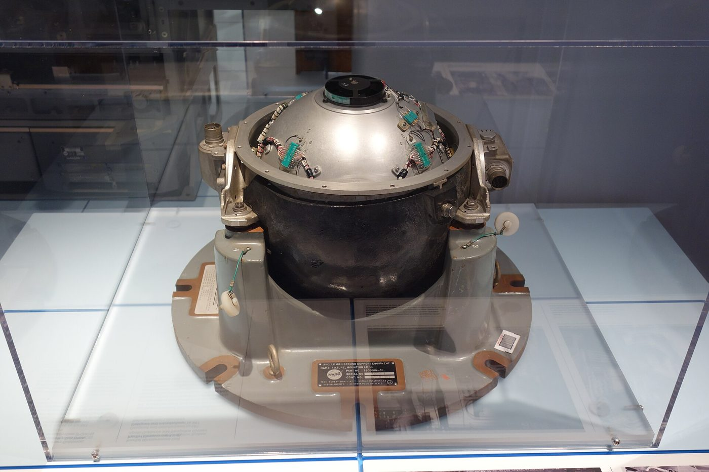
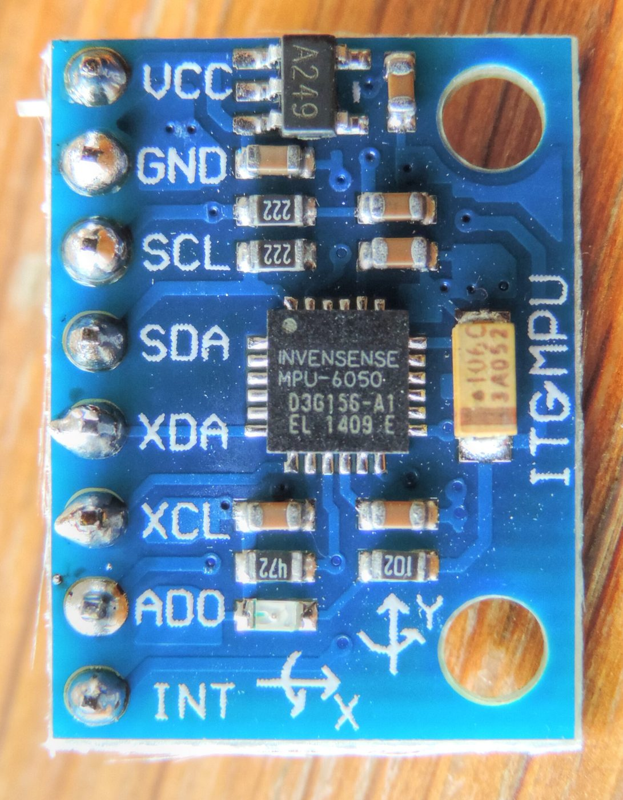
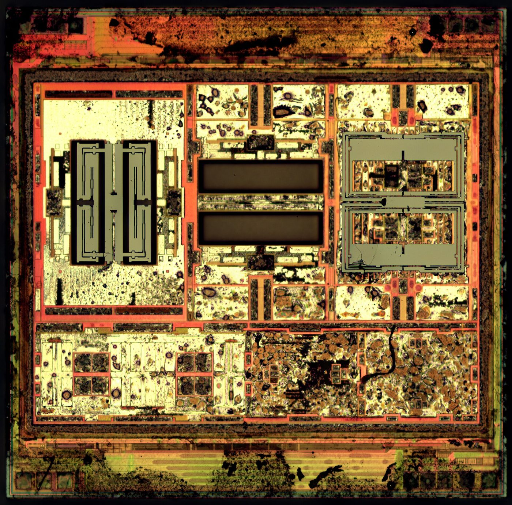

Gyroscope
Measures how fast you're rotating. Add up (integrate) the rate over time to get the angle.
Good: smooth, instant, ignores bumps. Bad: a tiny constant error (bias) gets added every step, so the angle drifts away forever.
Engineering · Robot Autonomy · Perception
How does a robot know if it is tipping over? It has a tiny chip that feels turning and feels which way is down. Each sense makes mistakes, so the robot listens to both and mixes them together. You do the same thing every time you stand on one foot!
A gyroscope is smooth and quick, but it slowly drifts off. An accelerometer never drifts, but it jitters and gets fooled by every bump. Neither can be trusted alone. Sensor fusion blends them so each covers the other's weakness. It's how a phone knows which way is up, a drone stays level, and a self-balancing robot stays upright.
← Back to EngineeringExplorer · Story time
I’m Bolt, and I balance on one wheel. To stay up, I need to know how much I’m leaning. I have two helpers inside me.
Spinny (the gyroscope) feels every turn. Spinny is smooth and fast, but slowly forgets where “straight up” is.
Droppy (the accelerometer) always knows which way is down, because it feels gravity. But Droppy is jumpy. Every bump makes Droppy shout the wrong answer.
So I listen to Spinny for quick moves, and to Droppy a tiny bit, to remember which way is down. Mixing helpers like this is called sensor fusion.
Meet the sensors
An IMU (inertial measurement unit) is a tiny chip holding a gyroscope and an accelerometer — the same chip as in the MPU-6050 module in your sensor kit. To find tilt, you can use either one. Both are wrong, in opposite ways.
Measures how fast you're rotating. Add up (integrate) the rate over time to get the angle.
Good: smooth, instant, ignores bumps. Bad: a tiny constant error (bias) gets added every step, so the angle drifts away forever.
Measures which way gravity pulls. Gravity points down, so its direction gives the tilt directly.
Good: never drifts. Bad: noisy, and any shove, bump, or turn looks like tilt.
Trust the gyro for fast changes. Trust the accelerometer for the long-run average. Blend the two continuously.
Robots fuse many more: wheel encoders, GPS, cameras, LiDAR, and compass.
Sim · Tilt estimator
The robot wobbles on its wheel. Each colored line is a guess of how much it leans. The white line is the real answer. Turn lines on and off with the checkboxes. Which guess stays closest to white?
The blue robot body wobbles. Its IMU reads 100 times a second. Each line is a different way to estimate the tilt. The white line is the truth, which a real robot never gets to see. Watch the scoreboard below the chart.
Choose Hold still. Wait 10 seconds. The orange gyro line slowly floats away even though the robot is still!
Turn on Bumpy floor. Watch the blue line jump with every bump.
Look at the green line. It is smooth like Spinny but does not float away. Press Describe the chart to check which guess is best.
Set movement to Hold still and wait. What happens to the gyro-only line? Set the bias to 0. Does the drift stop?
Drag α to 0.5, then 0.999. Which extreme looks like the accelerometer, and which like the gyro? Find the α with the lowest error.
Turn on the bumpy floor. Which estimate gets fooled most? Turn on Kalman and compare it to your best α.
The math, one line each
angle = α·(angle + gyro·dt) + (1 − α)·accel
Each step: move the old angle by the gyro, then nudge it a tiny bit (1 − α) toward the accelerometer. The nudges are too small to pass noise through, but they add up enough to cancel drift. Five lines of Arduino code.
Rudolf Kálmán (1960). It keeps a best guess and how uncertain it is. It predicts with the gyro (uncertainty grows), then corrects with the accelerometer. Its weight is set by comparing the two uncertainties, not by hand.
This version also estimates the gyro's bias and subtracts it.
A Kalman filter helped guide Apollo to the Moon. It fused the spacecraft's inertial sensors with radar and star sightings. Today it runs in every GPS receiver, phone, drone, and self-driving car.
Engineer deep dive
The filter is a high-pass on the integrated gyro plus a low-pass on the accelerometer. The two transfer functions add to exactly 1, so they complement each other:
Hgyro(s) = τs / (τs + 1) Hacc(s) = 1 / (τs + 1)
The crossover time constant is τ = α·Δt / (1 − α). With α = 0.98 and Δt = 0.01 s, τ ≈ 0.49 s. Slower than that, trust the accelerometer. Faster, trust the gyro.
State x = [angle, bias]T. Predict, then update:
x̂⁻ = F x̂ + B u
P⁻ = F P Fᵀ + Q
K = P⁻Hᵀ (H P⁻Hᵀ + R)⁻¹
x̂ = x̂⁻ + K (z − H x̂⁻)
P = (I − K H) P⁻
Here F = [[1, −Δt], [0, 1]], u = gyro rate, H = [1, 0], z = accelerometer angle. The sim's kalmanStep() is these five lines written out by hand.
R is how noisy you think the accelerometer is; Q is how much you think the true angle and bias can wander. Raise R and K shrinks, so the filter behaves like a high α. The Kalman filter is the optimal linear estimator only when the noise really is Gaussian with those variances.
Real orientation is 3-D, and rotations don't add like vectors. Drones use quaternions with an Extended Kalman Filter (EKF) or the Madgwick/Mahony filters. Self-driving cars fuse LiDAR, GPS, wheel odometry, and IMU in one big EKF or factor graph.
Why it matters
A balancing robot's PID controller can only be as good as the angle it's given. Feed it the gyro-only line and it slowly leans until it falls. Feed it the raw accelerometer and it shudders. Feed it the fused angle and it stands. The same goes for position: localization fuses wheel odometry with LiDAR scans.
Where you’ll see it
Click any photo to enlarge it.




Robot autonomy series
Quick check
1. Which helper always knows which way is down?
2. Why does the robot listen to both helpers?
3. Why is it harder to stand on one foot with your eyes closed?
1. Why does a gyro-only angle drift even when the robot sits still?
2. Why do bumps fool the accelerometer?
3. In a complementary filter with α = 0.98, which sensor handles fast changes?
4. What does a Kalman filter do that a basic complementary filter doesn't?
5. A complementary filter runs at 100 Hz with α = 0.99. What is its crossover time constant?